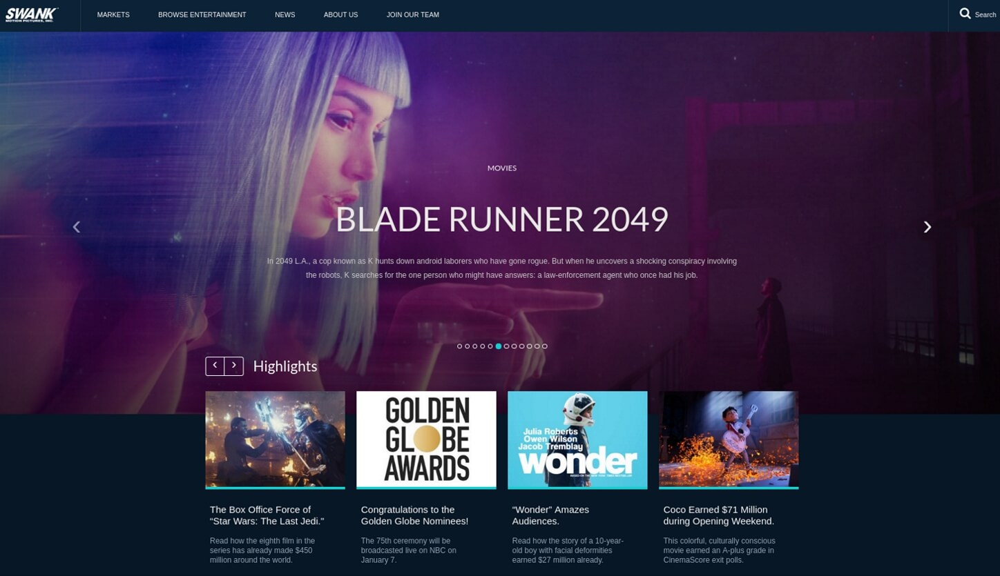

Scott Petrovic
I am a UI designer/developer. I actively develop my artistic, UI, and programming skills through college courses, self-studies, and freelance work. It is always an evolutionary process. I am always looking for opportunities to improve and become better with what I do.
 Resumé
Resumé


Portfolio
Most of the work I do I cannot share as it is internal tools that the company uses. I can share a bit about the process I use. I usually get direction from the head of our engineering department about features that the business wants. The highest priority items that need design work come to me. I then work with a business analyst, business stakeholder, and software developer to iron out all the details and and workflows. When everything is done I pass the designs and requirements off to the developer to get started. We use JIRA and email for managing the steps and communication. I did help build with the website shown above. That project involved helping marketing get familiar with using the Umbraco CMS and adding content that an outside agency did. There is an API that feeds in a bunch of movie titles, so I helped make sure all those processes were working.
I was put in charge of the user interface direction in 2014 for the project. For a lot of the work, we use a combination on communication tools since we are all remote: IRC, forums, and bug trackers. From this information I work with the developers and artists to come up with the final designs. The design decisions I help facilitate range from fixing confusing verbiage to creating an animation system workflow. I also spend a lot of time in the code as well doing front end development and improving the workflow and appearance. I usually do my development on Linux as that is what the other developers use. I have done a lot of wireframes and discussions if you want to see more of the process I use.
Another website I made related to Krita. Krita is built in C++, but has a Python wrapper so people can make plugins for it using the core code. I designed, wrote, and developed this site over a few weeks. To get the icons and actions pages, I had to download the Krita source code, and write a script that would parse it and extract images and text. See the project source code
I design and develop the krita.org marketing website since 2014. This involves iteratively making improvements and fixes as feedback is received. I work with developers, artists, and the community to prioritize changes. I procure illustrations and art mostly through social media where I request permission. I periodically collect feedback through the forums and other communication channels like IRC. The existing iteration focuses on improving the translator experience and making it easier to make edits and changes through a VS code editor IDE for new content.
A site that I helped work on from 2013-2014. I came in a little late to help out with the site design. I did help out quite a bit with javascript issues that arose from plug-ins and responsiveness. It was the first time I really worked much with GitHub and LESS before. It was a nice experience and the site turned out pretty well.
Experience
UI Designer/Developer
A post-theatrical movie distribution company that operates similar to NetFlix. I work in their engineering department and work with developers and business people. Most of the tools and designs that I work on are internal and deal with order fulfillment. I create wire frames and mock ups for Smart TV, web, and embedded applications. If design work is getting low, I help the developers and work on UI development. The development technologies I help out with are HTML, CSS, Angular.js, javascript, and C#.
UI Designer/Developer
A free and open source drawing and painting application. It is similar to Photoshop, but has a stronger emphasis on drawing and painting. This involves a lot of user research and learning how artists use the application. I do quite a bit of development as well. It is written in C++ using the Qt framework.
Web Designer
Designed aesthetics of multiple sites and updated as needed. Headed web analytics for quantitative & qualitative insights. Worked independently and worked under tight deadlines. Assisted marketing department with web strategies and direction
Layout Artist
Created daily newspaper layouts under strict deadlines. Worked with Editors and Photographers. Used QuarkXPress and NewsEdit Pro to assemble layouts
Art Director
Designed graphics for signs, banners, and posters for spot color printing. This is my dad's company, which expains the same last name. Edited artwork to be compatible with printing. Performed color. Separating with added guidelines and trim marks. Established good, positive relationships with clients and employees. Interacted with customers on a regular basis to ensure accuracy
Education
Purdue University
GPA: 3.49
Awards, Certificates & Activities
- Three.js Journey Certificate 2023 (three.js and React Three Fiber training) See certificate
- Google Summer of Code Mentor 2016-2020
- Artist Choice Award in ImagineFX (Issue 139) for Digital Painting with Krita 2.9 book